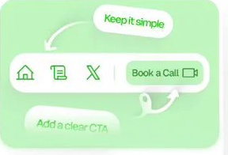
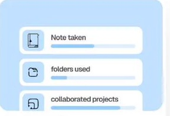
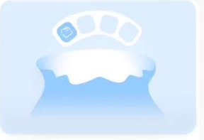
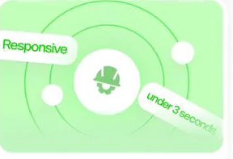

Notely for Android
Take notes on the go with fast, secure sync across all your devices. Capture thoughts instantly and access them anytime.
Combine note-taking, idea tracking, and daily planning in
one smart notebook, ready whenever inspiration hits.
Notes shouldn’t feel messy or scattered. With Scribblit, every thought flows
into an organized system that adapts to your style and keeps you focused.

Take notes on the go with fast, secure sync across all your devices. Capture thoughts instantly and access them anytime.

Jot down notes, organize with folders, and collaborate on shared projects, all from your iPhone or iPad.

Work smarter on desktop. Enjoy seamless syncing, keyboard shortcuts, and distraction-free writing.

Access your notes anywhere with a responsive web app. No installation, just space to think.
Start capturing your thoughts instantly.
Keep them organized. Effortlessly.
Simplify the way you take notes. Write down your thoughts instantly, arrange them into clear categories, and find anything in seconds.
Quickly jot down notes, ideas, tasks, and reminders without losing flow. Add tags, folders, or checklists to keep everything in order.
Your notes grow with you. Keep your thoughts connected and find what you need instantly.
A tool that fits your style—whether for study, work, or personal journaling. Take notes your way.
Flexible pricing built for every stage, from startup to scale.
Great for small teams just getting started.
For growing teams that need full visibility.
Illustrative template pricing. No payment is collected.